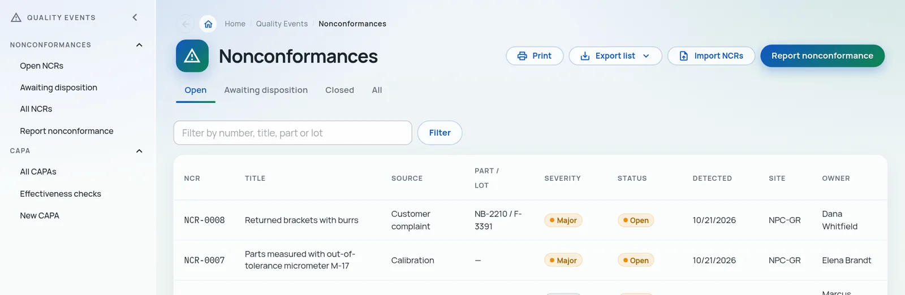

Nonconformance
Capture, contain and disposition nonconforming product
Log an NCR from the line, from receiving or from a customer complaint. Record containment, assign an owner and take it through disposition with signatures where they matter.
- Severity, source, part, lot and site on every record
- Raise a CAPA straight from the NCR
- Files, history and approvals kept with the record
